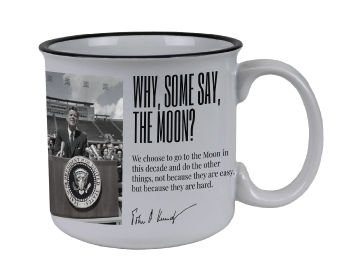

Craft
Heath Ceramics
Sausalito, CA · Since 1948
California craft heritage. Edith Heath believed useful objects can be beautiful. The glaze pools where it wants — mid-century modern, made by hand.
A Curated Collection
Every morning begins with a vessel.
These hold our rituals, our memories, our warmth.
"The cup is small. The history is not."

The Centerpiece
In 1960, John F. Kennedy's campaign invented something beautiful: politics as conversation. "Coffee with Kennedy" events happened in living rooms, church halls, union basements — anywhere people gathered with cups in hand.
This paper cup is democratic intimacy made artifact. White as hope, red as conviction. Disposable by design, yet here it remains — outlasting administrations, outlasting eras.
Your ceramic echo transforms the ephemeral into the lasting. Every morning, you hold a piece of that hopeful year.
"We choose to go to the Moon in this decade and do the other things, not because they are easy, but because they are hard."
— John F. Kennedy, Rice University, September 12, 1962
For When You Want Another
The original paper cups are museum pieces now. But the spirit lives on in ceramic reproductions and Kennedy memorabilia.
Built Around Your Kennedy Cup
Every mug here shares something with yours: a story worth telling, a maker worth knowing, a morning ritual worth protecting.
Craft
Sausalito, CA · Since 1948
California craft heritage. Edith Heath believed useful objects can be beautiful. The glaze pools where it wants — mid-century modern, made by hand.

Craft
Asheville, NC · Est. 2009
New Southern craft. Glazes with names like "Tequila Sunrise" and "Night Swim." Designed for daily use. Built to outlast you.
Design
Kaj Franck · Finland · 1952
Kaj Franck believed good design should be democratic. Teema has remained unchanged since 1952 because perfection needs no revision.

Design
Nagasaki, Japan · 400-year tradition
Four centuries of ceramic mastery in modern form. Modular, stackable, matte finish. Designed to become part of your life.
Cultural
Goryeo tradition · Korea
Jade green, crackle glaze. A thousand years of pottery tradition. The color was said to capture "the blue of the sky after rain."
Cultural
Mashiko, Japan · Mingei tradition
Wood-fired in climbing kilns. Ash lands where it will. Each cup a collaboration between potter and flame. Wabi-sabi made tactile.
Historical
Anchor Hocking · 1940s–1970s
Milk glass in that impossible green. Diner counters, grandmother's cabinets, American nostalgia. Heavy, glowing, eternal.
Historical
Japanese art of golden joinery
The mug that broke, mended with gold. More beautiful for having been broken. Every crack a story. Every seam worn proudly.